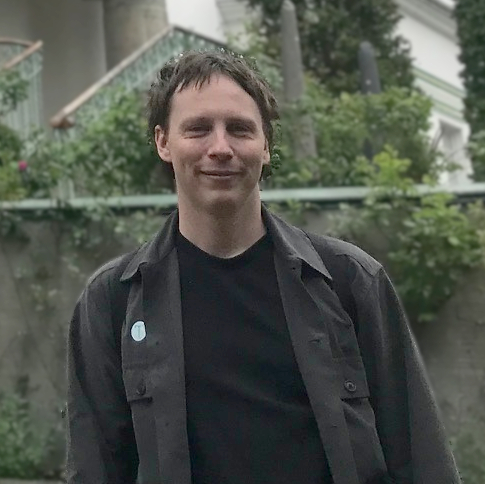

Data Engineer - Region Skåne
Present
Data warehouse development and maintenance.

Email: per.lundhammar@gmail.com
Phone: +46 730 77 83 17
Data warehouse development and maintenance.
Research on photon–silicon interaction modeling using maximum likelihood and machine learning.
Monte Carlo simulations in GEANT4 with ROOT-based data processing.
Results presented at IEEE NSS/MIC/RTSD 2024 (Florida), Fully 3D 2025 (Shanghai), and IEEE NSS/MIC/RTSD 2025 (Yokohama).
Teaching: Modern Physics (SH1014), Oct 2025 – Jan 2026.
Built data pipelines in SQL and Python for time-series forecasting and reporting dashboards in Power BI.
Courses: Calculus in One Variable (SF1625), Calculus in Several Variables (SF1626), Linear Algebra (SF1672), Perspectives on Mathematics (SF1661), Introductory Course in Mathematics (SF0003).
Master of Science in Theoretical Physics.
Bachelor of Science in Engineering Physics.
Engineering Physics program, 300 ECTS.
Python, MATLAB, SQL, Git, Linux/Bash.
Languages: Swedish, English.
Journal article
Per Lundhammar, Tommy Ohlsson.
Phys. Rev. D 102, 054018 (2020).
Conference papers
Per Lundhammar, Luca Terenzi, Mats Danielsson, Mats Persson.
Proceedings of Fully 3D 2025.
Luca Terenzi, Per Lundhammar, Mats Persson.
Proceedings of Fully 3D 2023.
Fully 3D 2025, Shanghai.
DP-203, 2023.
Trinity College Dublin, School of Mathematics, 2021.
Zhejiang University, Hangzhou, 2019.
Stiftelsen Styffe (2025, 34.2 kSEK)
Stiftelsen Ingenjör Ernst Johnsson (2022, 30.0 kSEK; 2021, 20.0 kSEK; 2020, 30.0 kSEK)
Håkanssons stiftelse (2021, 10.0 kSEK)
Henrik Göranssons Sandviken stipendiefond (2021, 38.0 kSEK)